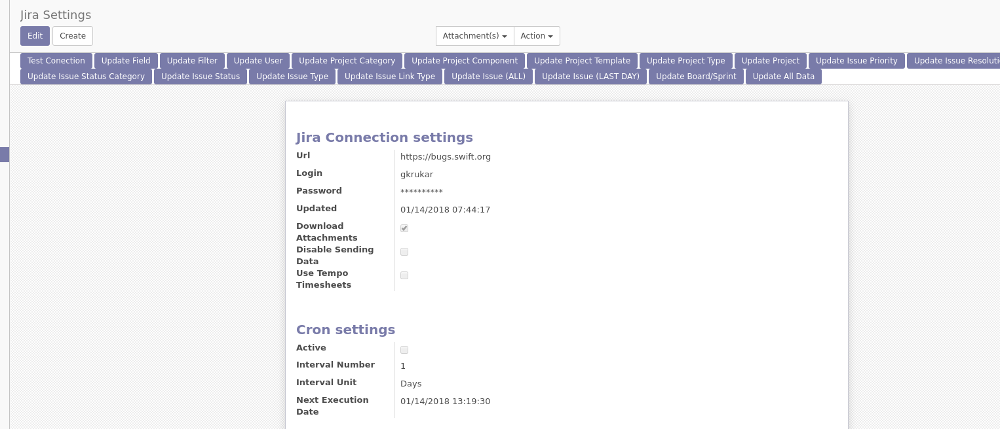
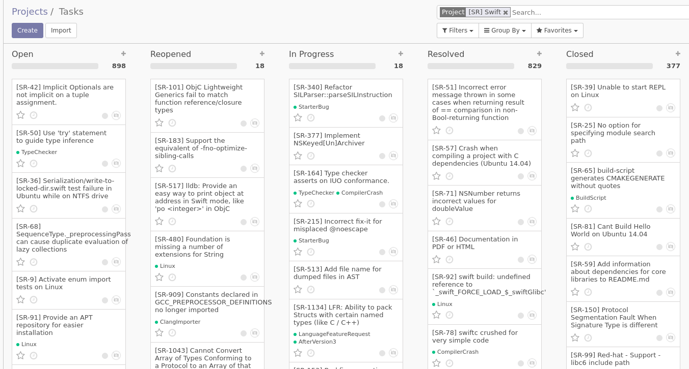

Odoo <-> Jira Connector


All Futures
- Downloading/Updating/Creating Project Information
- Downloading/Updating/Creating Issue Information
- Downloading Users Information
- Connecting Jira and Odoo users (by email)
- Downloading/Sending Attachments
- Downloading Board Information
- Downloading/Updating/Creating Sprints
- Downloading/Creating chat messages
- Downloading/Creating Issue links
- Downloading/Updating/Creating Worklogs
- Support for Jira Tempo Plugin
- Automatic Cron action updating new information from Jira
- Need additional info / Test server / more features / support - email me grzegorzgk1@gmail.com